TAssetBundle Manual
TAssetBundle is a powerful, integrated asset bundle management system.
Requirements
- Unity Version: 2019.4 or later
- Supported Platforms: Windows, macOS, iOS, Android, WebGL
Quick Start
Get started with TAssetBundle in 3 steps:
Step 1: Create TAssetBundleManifest
Right-click on a folder containing assets you want to bundle, then select Create > TAssetBundle > TAssetBundleManifest.
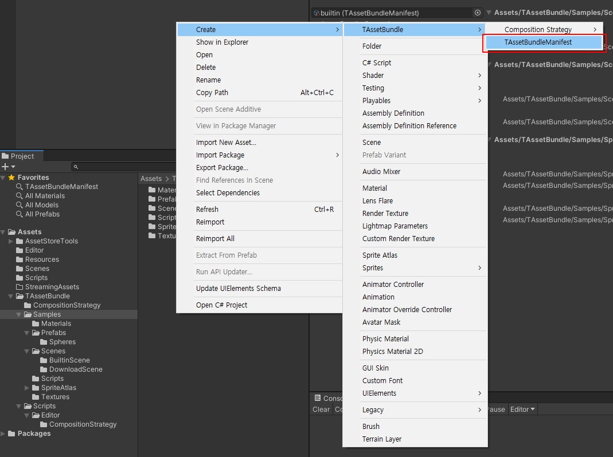
Step 2: Configure and Build
- Select the created TAssetBundleManifest
- Add a composition strategy (e.g., all_together)
- Right-click and select Run Composition Strategy
- Go to TAssetBundle > Build Asset Bundle menu
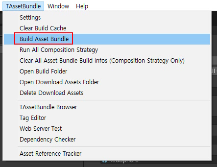
Step 3: Load Assets
using UnityEngine;
using TAssetBundle;
using TAssetBundle.Extensions;
public class QuickStartExample : MonoBehaviour
{
public string spritePath;
async void Start()
{
await TAssetBundles.InitializeAsync();
// Load and link to this GameObject — auto-released on destroy
AssetManager.LoadAssetAsync<Sprite>(gameObject, spritePath)
.OnCompleted += asset =>
{
GetComponent<SpriteRenderer>().sprite = asset.Get();
};
}
}
That's it! For development, you can also use Editor Asset mode to skip building.
Table of Contents
- Core Concept: Manifest
- AssetManager (Recommended)
- TAssetBundles (Low-Level API)
- PrefabPoolManager
- Remote Download
- TAssetBundle Settings
- Building Asset Bundles
- Plugin System
- Editor Tools
- Editor Play Modes
Core Concept: Manifest
How Manifests Work
TAssetBundleManifest is the central unit of TAssetBundle.
When you create a TAssetBundleManifest in a folder, every file and subfolder under that folder becomes a managed target of that manifest. The manifest defines how those assets are grouped into AssetBundles.
Runtime code never needs to know about bundle structure. You always load assets by path — which bundle they belong to, how bundles are split, and what the dependencies are is all handled automatically. This means you can freely restructure your bundles at any time without changing a single line of runtime code.
There are two ways to configure bundles:
Auto Configuration — Use built-in CompositionStrategy assets to automatically configure bundles. Several strategies are included by default (all_together, all_separately, regex_match, clear, etc.). Add strategies to the manifest and run them to auto-generate the bundle configuration. Strategies are executed in order, so you can combine them: for example, bundle everything together first, then exclude specific assets.
Manual Configuration — Drag assets directly into the manifest's AssetBundleBuildInfo list to manually define exactly which assets go into which bundle.
Multiple Manifests per Folder
You can create multiple manifests in the same folder, each with its own bundling strategy. This lets you apply different rules to different subsets of assets within the same directory tree.
For example, in an Assets/Characters/ folder:
- Manifest A — Bundles all textures together (using regex to match
.pngfiles) - Manifest B — Bundles each prefab separately (using file filter on
.prefab)
Per-Manifest Options
Each manifest also controls:
- Builtin — Include bundles in StreamingAssets (shipped with the app, no download needed)
- Encrypt — Encrypt bundle contents for security
- Tags — Categorize bundles for selective downloads (e.g.,
"hd","lang-en","level1")
Creating a Manifest
Right-click on a folder > Create > TAssetBundle > TAssetBundleManifest
Manifest Inspector:
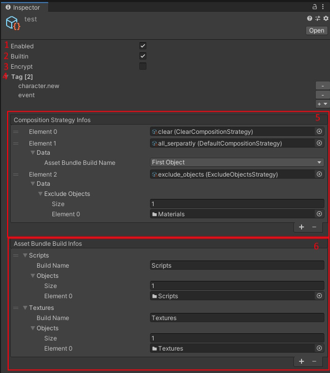
| # | Option | Description |
|---|---|---|
| 1 | Enabled | Include in AssetBundle build target |
| 2 | Built-in | Include AssetBundles in the app |
| 3 | Encrypt | Encrypt the configured AssetBundles |
| 4 | Tags | Set tags for download filtering |
| 5 | Composition Strategies | List of strategies to auto-configure bundles |
| 6 | Asset Bundle Build List | Configured AssetBundle information |
Manual Configuration:
You can manually add assets by clicking Add Asset Bundle Build Info and dragging assets.
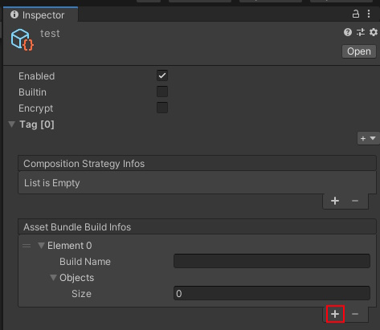
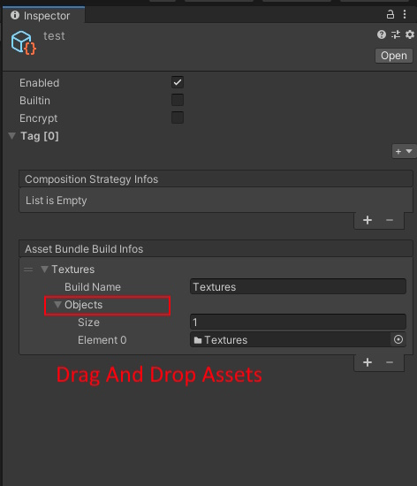
Auto Configuration:
Use composition strategies for automatic configuration. Add a strategy, then right-click the manifest and select Run Composition Strategy.
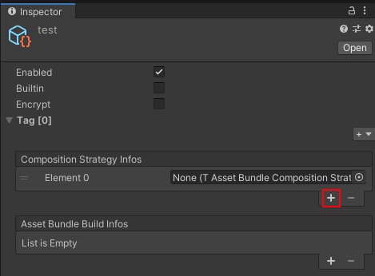
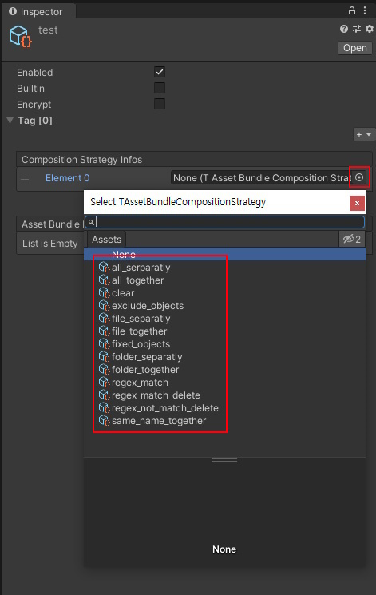
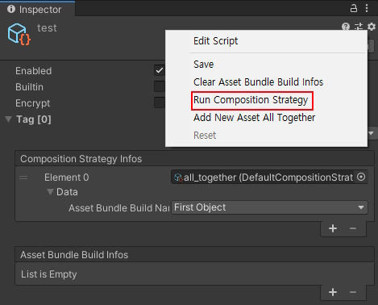
Composition Strategies
Composition strategies automatically configure how assets are grouped into AssetBundles.
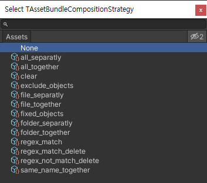
| Strategy | Description |
|---|---|
| all_separately | Add assets as individual asset bundles |
| all_together | Add assets as one asset bundle |
| clear | Clear asset bundle build information |
| exclude_objects | Exclude specific assets from build info |
| file_separately | Add only files as individual asset bundles |
| file_together | Add only files as one asset bundle |
| fixed_objects | Add only specific assets to one asset bundle |
| folder_separately | Add only folders as individual asset bundles |
| folder_together | Add only folders as one asset bundle |
| regex_match | Add assets matching regex to one asset bundle |
| regex_match_delete | Remove build info if filename matches regex |
| regex_not_match_delete | Remove build info if filename doesn't match regex |
| same_name_together | Add assets with same filename as one asset bundle |
You can also create custom strategies by extending TAssetBundleCompositionStrategy<Data>.
AssetManager (Recommended)
AssetManager (in TAssetBundle.Extensions) is the recommended way to load and manage assets. It provides automatic lifecycle management, usage tracking, and prefab pooling in one unified interface.
Context-Based Loading
The key feature of AssetManager is context-based loading. When you pass a GameObject as context, the asset is automatically linked to it. When the GameObject is destroyed, the asset reference is released — no manual cleanup needed.
using UnityEngine;
using UnityEngine.UI;
using TAssetBundle.Extensions;
public class ContextLoadingExample : MonoBehaviour
{
public string spritePath;
void Start()
{
// Load and link to this GameObject
// Asset is automatically released when this GameObject is destroyed
AssetManager.LoadAssetAsync<Sprite>(gameObject, spritePath)
.OnCompleted += asset =>
{
GetComponent<Image>().sprite = asset.Get();
};
}
// No OnDestroy cleanup needed!
}
You can also load with AssetRef for Inspector drag & drop:
[AssetType(typeof(Sprite))]
public AssetRef spriteRef;
void Start()
{
AssetManager.LoadAssetAsync<Sprite>(gameObject, spriteRef)
.OnCompleted += asset =>
{
GetComponent<Image>().sprite = asset.Get();
};
}
Manual Linking
If you need to load without a context first, you can manually link the asset later:
AssetManager.LoadAssetAsync<Sprite>(spritePath).OnCompleted += asset =>
{
image.sprite = asset.Get();
image.LinkAsset(asset); // Manual link — auto-released when image is destroyed
};
Prefab Pooling
AssetManager integrates prefab loading from AssetBundles with automatic pooling:
// Preload a prefab without instantiation
await AssetManager.PreloadPrefabAsync("Assets/Prefabs/Bullet.prefab");
// Load and instantiate from pool
var bullet = await AssetManager.GetPrefabAsync("Assets/Prefabs/Bullet.prefab", parent);
// Also works with AssetRef
AssetManager.GetPrefabAsync(bulletAssetRef, transform).OnCompleted += go =>
{
// use the instantiated prefab
};
// Return to pool when done (not Destroy!)
bullet.FreePrefab();
// Clear a specific prefab pool
AssetManager.ClearPrefabPool("Assets/Prefabs/Bullet.prefab");
// Clear all prefab pools
AssetManager.ClearPrefabPools();
Unloading Strategies
AssetManager provides multiple unloading strategies:
// Unload all loaded assets
AssetManager.UnloadAssetsAll();
// Unload only unused assets (reference count = 0)
AssetManager.UnloadUnusedAssets();
// Unload assets unused for more than N seconds
AssetManager.UnloadUnusedAssetsAfterLastUse(30f);
// Unload a specific asset
AssetManager.UnloadAsset("Assets/Sprites/icon.png");
AssetManager.UnloadAsset(myAssetRef);
Usage Tracking
Query loaded assets and their usage:
// Iterate all assets currently in use
foreach (var asset in AssetManager.GetUsingAssets())
{
Debug.Log($"{asset.AssetPath} — UsageCount: {asset.UsageCount}");
}
// Query a specific asset
if (AssetManager.TryGetAssetInfo("Assets/Sprites/icon.png", out var info))
{
Debug.Log($"Loaded: {info.IsLoaded}, Using: {info.IsUsing}");
}
// Check if any assets are still loading
bool loading = AssetManager.IsLoading();
// Protect an asset from auto-unloading
info.SetDontDestroy(true);
Use the Asset Usage Tracker editor window to visualize these relationships at runtime.
TAssetBundles (Low-Level API)
For cases where you need direct control over asset handles, use the TAssetBundles API. You are responsible for manually unloading assets.
Using Asset Path
Load assets using their project path:
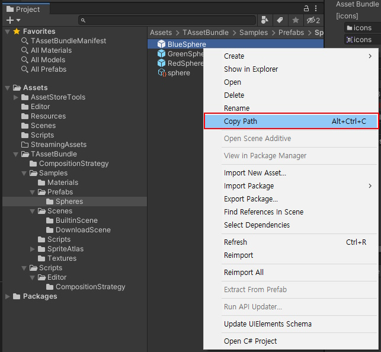
using UnityEngine;
using TAssetBundle;
public class TestLoadAsset : MonoBehaviour
{
public string prefabPath; // Asset Path
void Awake()
{
var loadAsset = TAssetBundles.LoadAssetAsync<GameObject>(prefabPath);
loadAsset.OnComplete += (AssetHandle<GameObject> assetHandle) =>
{
var asset = assetHandle.Get();
Instantiate(asset);
};
}
void OnDestroy()
{
TAssetBundles.UnloadAsset(prefabPath);
}
}
Using Asset Reference
Asset references allow drag-and-drop in the inspector and remain valid even if the asset is moved.
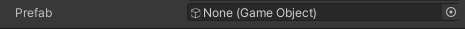
using UnityEngine;
using TAssetBundle;
public class TestLoadAssetReference : MonoBehaviour
{
[AssetType(typeof(GameObject))]
public AssetRef prefab;
private AssetHandle prefabHandle;
void Awake()
{
var loadAsset = TAssetBundles.LoadAssetAsync<GameObject>(prefab);
loadAsset.OnComplete += (AssetHandle<GameObject> assetHandle) =>
{
prefabHandle = assetHandle;
var asset = assetHandle.Get();
Instantiate(asset);
};
}
void OnDestroy()
{
TAssetBundles.UnloadAsset(prefabHandle);
}
}
PrefabPoolManager
PrefabPoolManager provides standalone prefab pooling — independent of AssetBundles. Use this when you already have a prefab reference and want efficient reuse.
using UnityEngine;
using TAssetBundle.Extensions;
public class PoolExample : MonoBehaviour
{
public GameObject bulletPrefab;
void Start()
{
// Pre-allocate 20 instances
PrefabPoolManager.Reserve(bulletPrefab, 20);
}
void Fire()
{
// Get from pool (creates new if pool is empty)
var bullet = PrefabPoolManager.Get(bulletPrefab, transform);
}
void OnBulletHit(GameObject bullet)
{
// Return to pool instead of destroying
bullet.FreePrefab();
}
void OnDestroy()
{
// Clear the pool
PrefabPoolManager.Clear(bulletPrefab);
}
}
PrefabPoolManager also supports typed components:
public Rigidbody projectilePrefab;
void Fire()
{
var rb = PrefabPoolManager.Get(projectilePrefab, transform);
rb.AddForce(transform.forward * 1000f);
}
Remote Download
Download AssetBundles from a remote server.
Download Flow:
- Check for Catalog Update
- Update the Catalog
- Get the Download Size
- Download the Assets
using UnityEngine;
using UnityEngine.UI;
using TAssetBundle;
public class RemoteDownloadExample : MonoBehaviour
{
public string remoteDownloadUrl;
public Text statusText;
private void Awake()
{
// [BuildTarget] is replaced with actual platform
TAssetBundles.SetRemoteUrl(remoteDownloadUrl);
}
private void OnGUI()
{
if (GUILayout.Button("Check Catalog Update"))
{
TAssetBundles.CheckCatalogUpdateAsync().OnComplete += result =>
{
statusText.text = "Need update: " + result;
};
}
if (GUILayout.Button("Update Catalog"))
{
TAssetBundles.UpdateCatalogAsync().OnComplete += result =>
{
statusText.text = "Update result: " + result;
};
}
if (GUILayout.Button("Get Download Size"))
{
TAssetBundles.GetDownloadSizeAsync().OnComplete += size =>
{
statusText.text = "Size: " + FileSizeFormatter.FormatSize(size);
};
}
if (GUILayout.Button("Download All"))
{
var download = TAssetBundles.DownloadAsync();
download.OnProgress += info =>
{
double percent = info.DownloadedSize / (double)info.TotalDownloadSize * 100;
statusText.text = $"Downloading: {percent:0.0}%";
};
download.OnComplete += info =>
{
statusText.text = info.IsDownloadComplete() ? "Complete!" : "Failed";
};
}
}
}
Download by Tags:
// Get size for specific tags
TAssetBundles.GetDownloadSizeByTagsAsync(new[] { "character", "level1" });
// Download specific tags
TAssetBundles.DownloadByTagsAsync(new[] { "character" });
Download by Assets:
// Download specific assets
TAssetBundles.DownloadByAssetsAsync(new AssetRef[] { myAssetRef });
Download by Scenes:
// Download scenes
TAssetBundles.DownloadByScenesAsync(new[] { "MyScene" });
TAssetBundle Settings
Access via TAssetBundle > Settings menu.
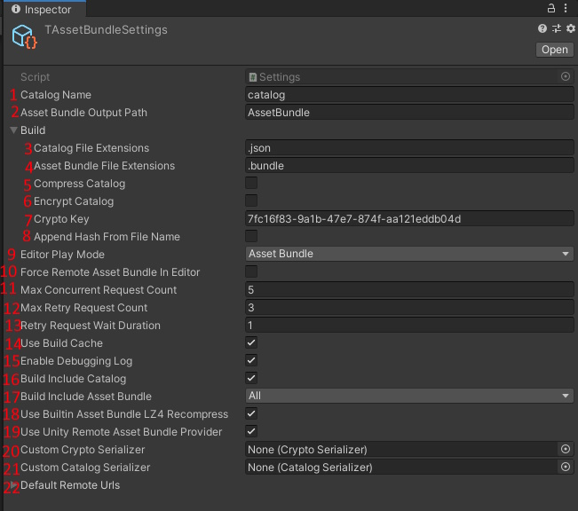
| # | Setting | Description |
|---|---|---|
| 1 | Catalog Name | Name of the catalog file |
| 2 | Output Folder | AssetBundle build output folder |
| 3 | Catalog Extension | Catalog file extension |
| 4 | Bundle Extension | AssetBundle file extension |
| 5 | Compress Catalog | Enable catalog compression |
| 6 | Encrypt Catalog | Enable catalog encryption |
| 7 | Encryption Key | Key for encryption |
| 8 | Append Hash | Add hash to asset bundle filename |
| 9 | Editor Play Mode | Asset loading mode in editor |
| 10 | Force Remote Only | Force remote AssetBundles in editor |
| 11 | Max Concurrent Requests | Maximum concurrent web requests |
| 12 | Max Retry Count | Maximum web request retries |
| 13 | Retry Wait Duration | Wait time between retries |
| 14 | Use Build Cache | Only build changed AssetBundles |
| 15 | Debug Log | Enable debug logging |
| 16 | Include Catalog | Include catalog in app |
| 17 | Embed Method | How to embed AssetBundles |
| 18 | Recompress to LZ4 | Recompress built-in bundles to LZ4 |
| 19 | Use Unity Provider | Use UnityRemoteAssetBundleProvider |
| 20 | Custom Catalog Serializer | Custom catalog serializer |
| 21 | Custom Crypto Serializer | Custom crypto serializer |
| 22 | Default Remote URL | Default remote download URL |
Building Asset Bundles
After configuring your manifests, build AssetBundles via TAssetBundle > Build Asset Bundle menu.
Build Features:
- Incremental Build: Only changed bundles are rebuilt (when Build Cache is enabled). The cache tracks file hashes (MD5) and propagates changes through the full dependency graph — both forward and reverse.
- Automatic Dependency Management: Dependencies between bundles are handled automatically
- Cross-Platform: Build for any supported platform
Plugin System
TAssetBundle supports a plugin architecture for extending its functionality. Plugins can hook into:
- Build Pipeline — Add custom build steps (e.g., copying bundles to asset packs)
- Runtime Loading — Provide custom asset bundle loading providers
- Inspector UI — Add per-manifest configuration UI
Plugins are implemented as ScriptableObject assets (PluginBase) with associated plugin modules (PluginModuleBase<T>) discovered via the [PluginModule] attribute.
Included Plugin: Play Asset Delivery
The Play Asset Delivery plugin demonstrates the plugin system. It integrates Google Play's asset pack system for Android AAB builds, allowing bundles to be delivered via install-time, fast-follow, or on-demand delivery. See the TAssetBundlePlugins/PlayAssetDelivery/ folder for details.
Editor Tools
TAssetBundle Browser
A unified view of all manifests and bundles. Access via TAssetBundle > TAssetBundle Browser.
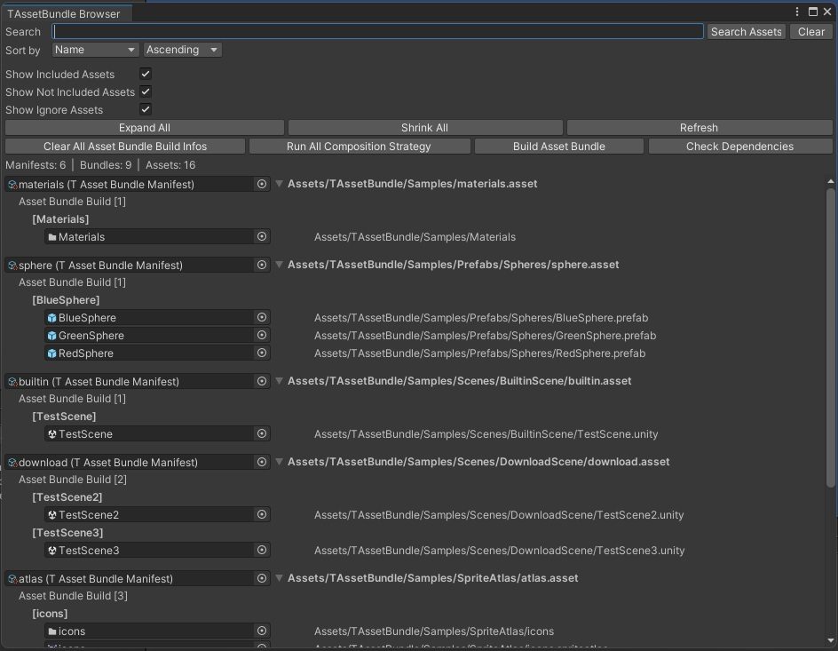
Features:
- Search: Filter manifests by name, or search assets across all manifests
- Sort: Sort by Name, Bundle Count, or Asset Count
- Show Options: Toggle included, not included, or ignored assets
Toolbar Actions:
| Button | Description |
|---|---|
| Clear All Asset Bundle Build Infos | Remove all bundle configurations |
| Run All Composition Strategy | Execute strategies on all manifests |
| Build Asset Bundle | Build all configured bundles |
| Check Dependencies | Analyze bundle dependencies |
TAssetBundle Menu
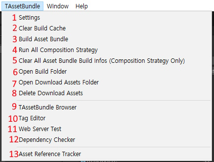
| # | Menu Item | Description |
|---|---|---|
| 1 | Settings | Open TAssetBundle Settings |
| 2 | Clear Build Cache | Remove build cache for current platform |
| 3 | Build Asset Bundle | Build AssetBundles |
| 4 | Run All Composition Strategy | Run strategies on all manifests |
| 5 | Clear All Composition Strategy | Clear all manifest build info |
| 6 | Open Build Folder | Open build output folder |
| 7 | Open Cache Folder | Open downloaded assets cache folder |
| 8 | Clear Cached Assets | Remove downloaded asset cache |
| 9 | TAssetBundle Browser | Open browser window |
| 10 | Tag Editor | Open tag editor |
| 11 | Web Server Test | Open web server test window |
| 12 | Dependency Checker | Check AssetBundle dependencies |
| 13 | Asset Reference Tracker | Track active assets at runtime |
Asset Usage Tracker
Track which GameObjects are using which assets during play mode. This works with AssetManager's context-based loading and LinkAsset.
Access via TAssetBundle > Extensions > Asset Usage Tracker.
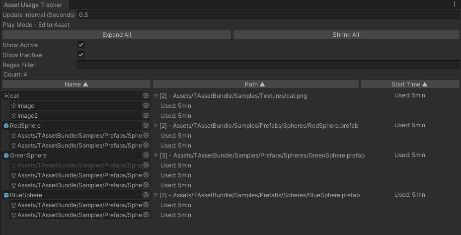
Features:
- View objects currently using assets
- Sort and filter with regex
- Debug memory usage and find leaks
- See loaded vs. in-use asset counts
Editor Play Modes
TAssetBundle supports two play modes in the editor:
Editor Asset Mode (Development)
Load assets directly without building AssetBundles. Fast iteration during development.
- Go to TAssetBundle > Settings
- Set Editor Play Mode to Editor Asset
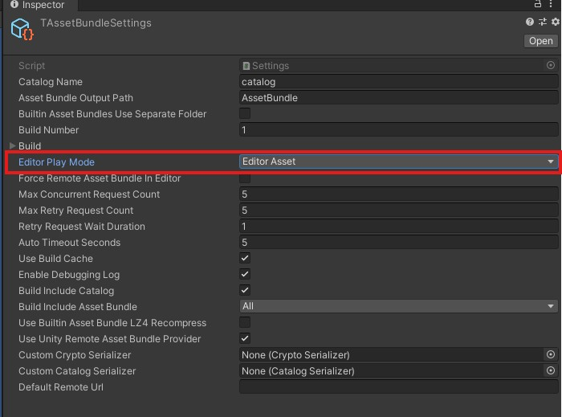
Asset Bundle Mode (Testing)
Load assets from built AssetBundles. Test production behavior.
- Build your AssetBundles first
- Go to TAssetBundle > Settings
- Set Editor Play Mode to Asset Bundle
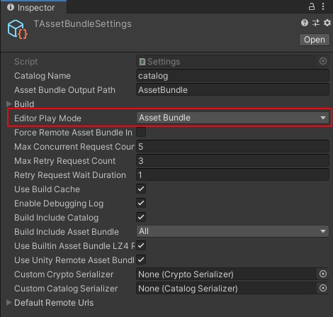